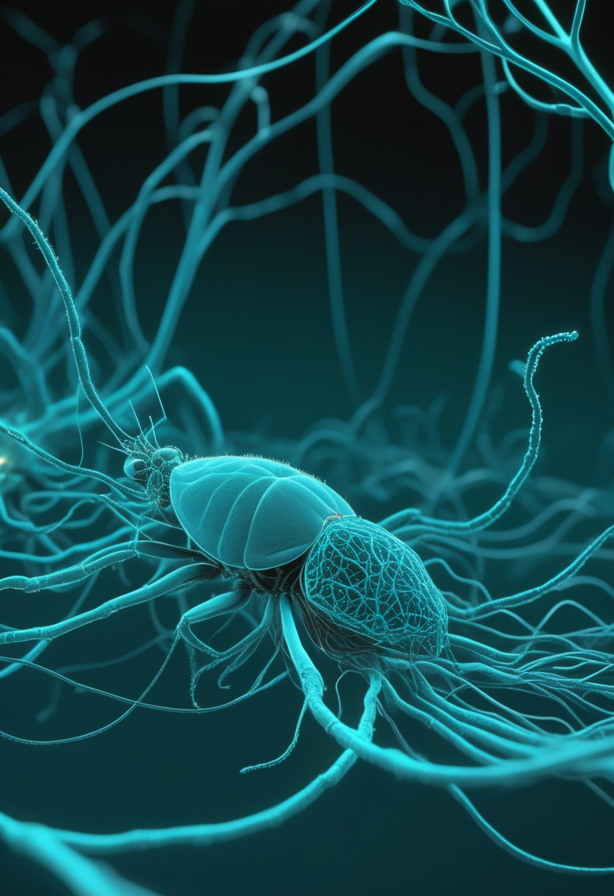
日曜日の便り。計算神経科学スタートアップEon Systemsが2026年3月、キイロショウジョウバエの脳（約14万ニューロン）を物理シミュレーション環境内で動作させる世界初の「閉ループ行動再現」に成功した。意識転送への道はまだ30〜40年先と神経科学者たちは言うが、この小さな飛翔が全脳エミュレーション研究の夜明けを告げる。SMAの世界ではNovartis Itvismaが2歳以上・成人にも遺伝子治療の扉を開き、MDA学会がNBS経由の早期治療効果を数字で示した。SynchronがBCI市場初のFDA PMAを狙うピボタル試験を開始する。エボラDRCは依然緊急事態、ウガンダは6/5以降16日超のゼロで終息の節目が視野に入り、WHOはOne Responseで複合感染症を束ねる。Euclid Q2が今週木曜日に迫り、CERN LHCbが二重チャームクォーク粒子という新粒子を発見した。問いながら世界は前進する、日曜日。
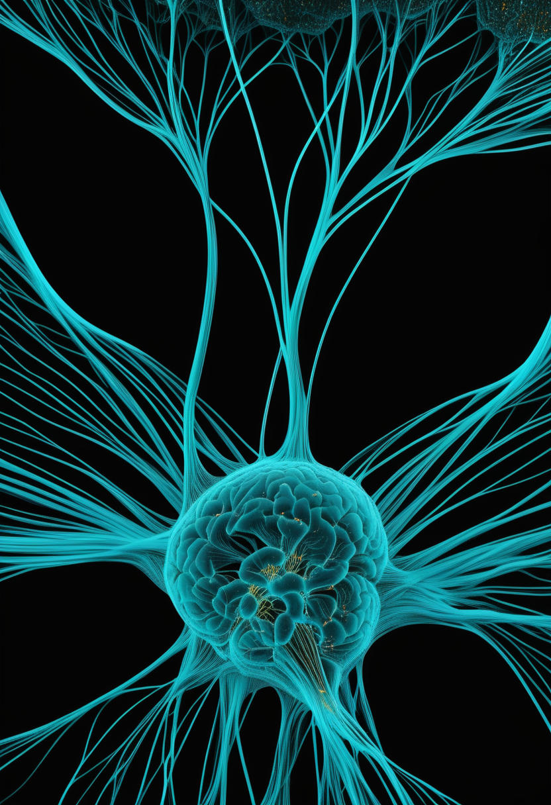
計算神経科学スタートアップEon Systemsが2026年3月、キイロショウジョウバエの脳（FlyWireコネクトーム由来・約14万ニューロン）をMuJoCo物理シミュレーション環境内で動作させ、光への反応・歩行・摂食・毛づくろいという複数の行動を単一デジタルモデルで生成することに成功した。2024年Nature論文でコネクトームと神経伝達物質の同一性のみから神経反応を91%再現と実証したベースモデルが、今回初めて「ニューラル出力→物理ボディ→環境フィードバック」の閉ループに組み込まれた。これは単なる神経回路シミュレーションではなく、外界と相互作用する身体を持つデジタル生命体の世界初の実現だ。次のマイルストーンはマウス脳（約7,000万ニューロン、ハエの560倍）の高忠実度エミュレーション。意識転送の実証は依然として30〜40年先と評価されるが、「行動するデジタル脳」という概念が実験室から現実へ降りてきた日として、2026年3月は全脳エミュレーション研究史に刻まれる。
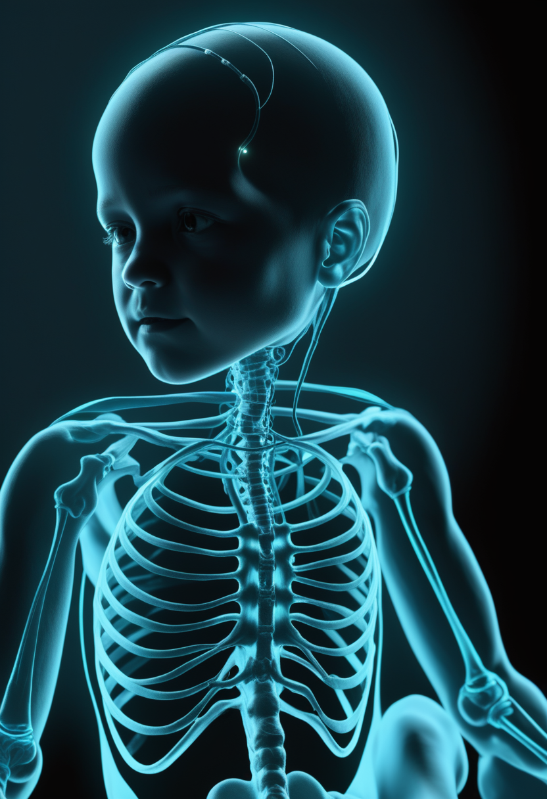
2026年MDA Clinical & Scientific Conference（フロリダ州オーランド）で発表された研究によれば、新生児スクリーニングで発見されたSMA乳児は症状出現後診断群より有意に早期に治療を開始でき、日常機能スコアが高かった。SMN2コピー2本で無症状段階から治療開始した41例の全例が独立した着座を獲得し、31例が歩行を達成（既存統合データ）。「早く見つけて早く治療する」という原則が国際的コンセンサスとして確立されつつある。アピテグロマブFDA審査（9/30）・高用量Spinraza承認と並んで、予防的早期治療体制の整備がSMA医療の次の主戦場だ。
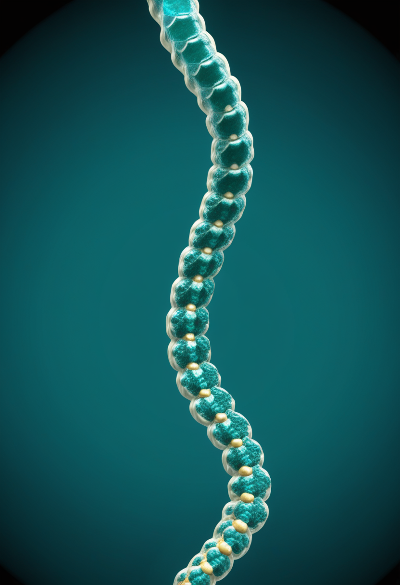
NovartisはItvisma（オナセムノジーン・アベパルボベック-brve：髄腔内投与型）のFDA承認を2025年11月24日に取得した。従来のZolgensma（静脈内投与・2歳未満限定）に対し、Itvismaは体重依存なしに脊髄液注射で遺伝子を中枢神経に直接届け、対象年齢が「2歳以上・成人」に大幅拡大された。臨床試験では運動機能の有意な改善と疾患進行の安定化を実証。卸売取得コストは259万ドル（約3.9億円）に設定。遺伝子治療を受けられなかった年長患者・成人SMA患者へ、新たな扉が開かれた。
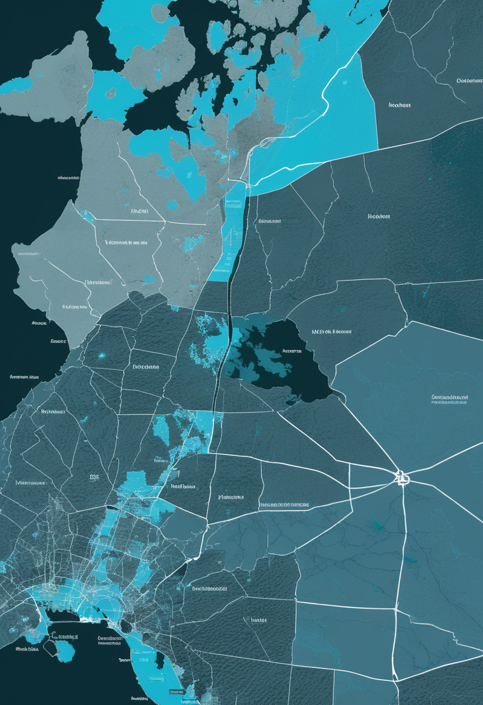
2026年PMC掲載（PMC12551087）のケベック州SMA新生児スクリーニングプログラム初年度報告は、スクリーニング精度・陽性確認率・治療開始までの日数などを詳細に記録した。北米での普及が着実に進んでいることが示されており、日本では38都道府県での任意NBS実施が全国化に向けて動き続けている。英国・日本・ケベック州と、各国・地域の実装データが蓄積されることでNBS普及の科学的根拠が一層強化される。国際的なNBS標準化とともに、早期介入による神経保護効果のエビデンスが積み重なっている。
MDA学会がNBS経由の早期治療効果を数字で示し、Itvismaが2歳以上・成人に遺伝子治療を開き、ケベック州初年度報告が国際NBS普及を後押しする ── 「早く見つけて深く治療する」という体制が三方向から着実に整いつつある日曜日。
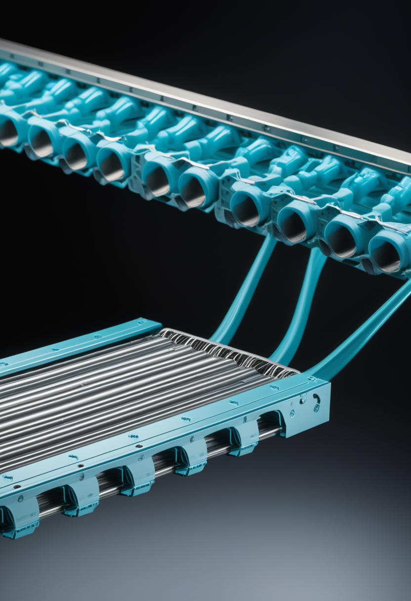
NeuralinkはBCIデバイスの高量産体制と、ほぼ完全自動化された手術プロセスへの移行を2026年に実施する計画を進行中だ。2025年6月に調達した$650M Series E（ARK Invest・Sequoia Capital等主導、$9B評価）が量産化と次世代デバイス開発を支える資金基盤となっている。「電極糸が硬膜を切除せずに直接貫通」する設計変更で手術侵襲性を大幅低減。現在までの移植完了者は約12名（一部報告では21名）で、思考によるロボットアーム操作・ALS患者の40WPM文字入力が実証されている。量産フェーズへの移行はBCIを「個人実験」から「普及可能な医療機器」へと変える歴史的転換点だ。
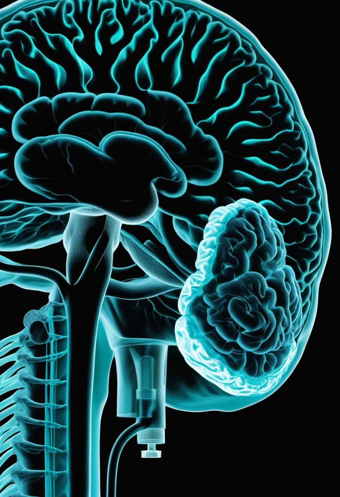
SynchronはBCI分野初のFDA PMA取得を目標に、2026年にピボタル臨床試験を開始する計画を発表（Tech Times 2026-06-06）。COMMAND早期可行性試験では全6患者が12ヶ月間追跡で脳・血管関連の重篤有害事象ゼロという一次安全エンドポイントを達成した。経頸静脈・低侵襲なStentrodeが特徴で、開頭手術不要なアプローチがNeuralinkとの明確な差別化軸だ。2025年11月調達の$200M Series Dが試験費用・商業化準備を支援する。BCIが初めて医療機器として市場参入する歴史的瞬間が、2026年のピボタル試験で現実に近づく。
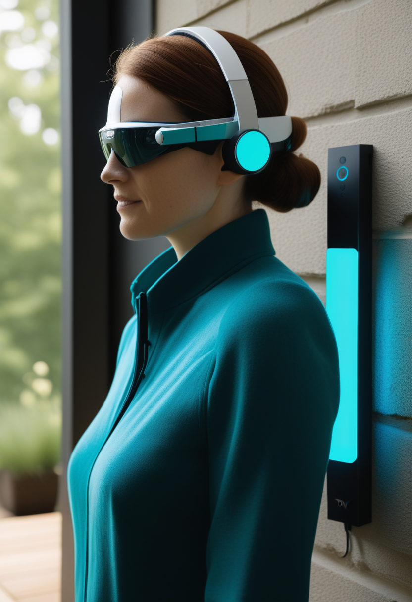
Tobii Dynavoxは業界初の屋外対応アイトラッキング通信補助デバイス（TD I-Series）を展開しており、ALS・脳性麻痺の重度障害者が直射日光下でも視線入力でコミュニケーションできる環境を実現。スマートホーム制御・SNS接続・Web閲覧などが1台に集約されており、BCIと視線入力の協調による重度障害者支援が2026年の主要トレンドとなっている。視線入力が「屋内の特殊環境」から「日常のあらゆる場所」へと解放されることで、生活の自由度が根本から変わる。
Neuralinkが$650M Series Eを燃料に量産フェーズへ踏み込み、SynchronがBCI初のFDA PMAを狙うピボタル試験を開始し、Tobii Dynavoxが視線入力を屋外の日常に解放する ── BCIと視線入力が「臨床から普及」へ同時に踏み出した日曜日。
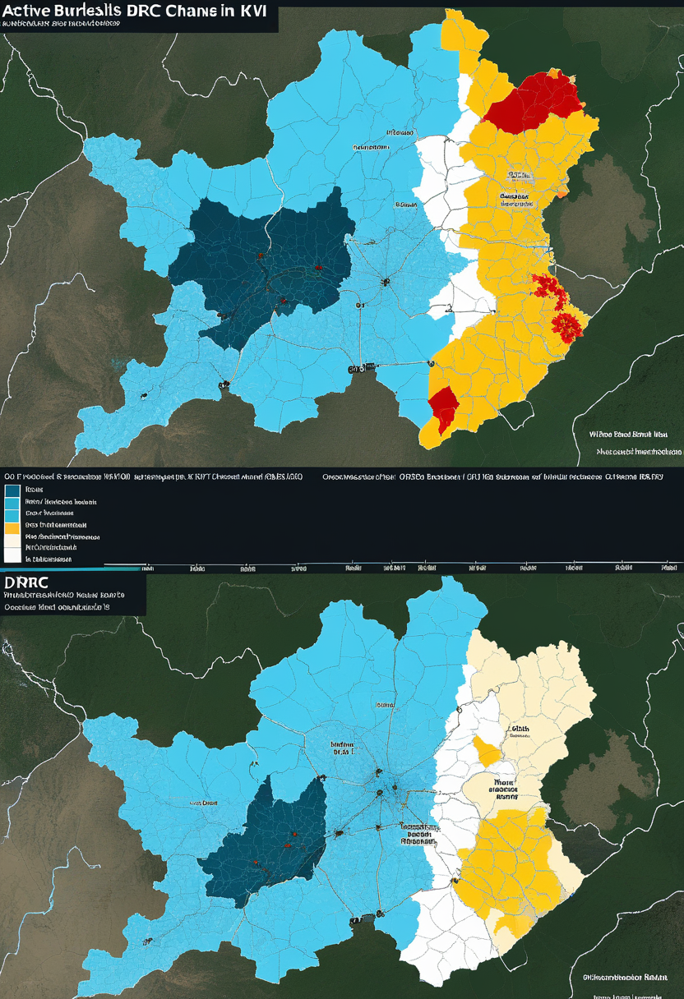
DRCエボラ（ブンディブギョ型）はWHO DON607（6/17付）更新で確定837例・196死者（致死率約23%）が報告されており、PHEICは継続中だ。一方ウガンダでは6月5日以降新規確定例ゼロが続いており、6/21時点で16日超。WHOの終息宣言基準（最後の感染者確認から42日間ゼロ）には21日がひとつの節目となる。越境封じ込め成功の一方でDRCでは武装勢力支配地域での接触追跡率50%以下という構造的困難が続く。WHOは6〜11月の統合対応計画「One Response」を発動し、エボラ・mpox・コレラ・デングへの包括対応を図っている。
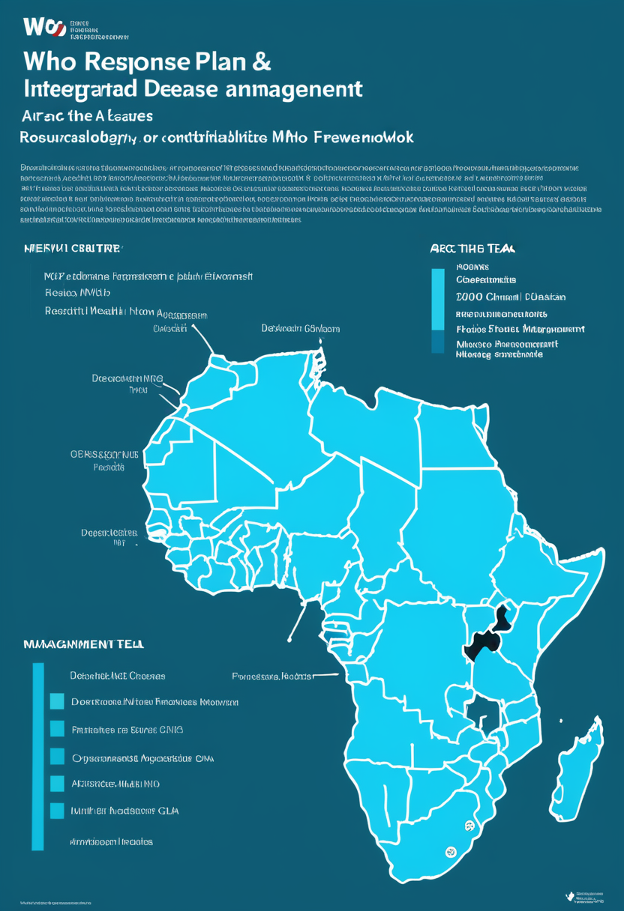
マダガスカルでは2025年12月18日〜2026年6月9日の累計でClade Ib mpoxの確定例が2,000件・死者7人に達している。WHOはエボラPHEIC下のアフリカで複数の感染症緊急事態が重なる状況に対応するため「One Response」統合計画（2026年6〜11月）を発動した。エボラ・mpox・コレラ・デングへの資源配分を一元管理し、各感染症対応が独立して動く非効率を解消することが狙いだ。「複数の緊急事態が同時進行する世界」へのWHOの組織的回答として、今後の感染症対応モデルになる可能性がある。
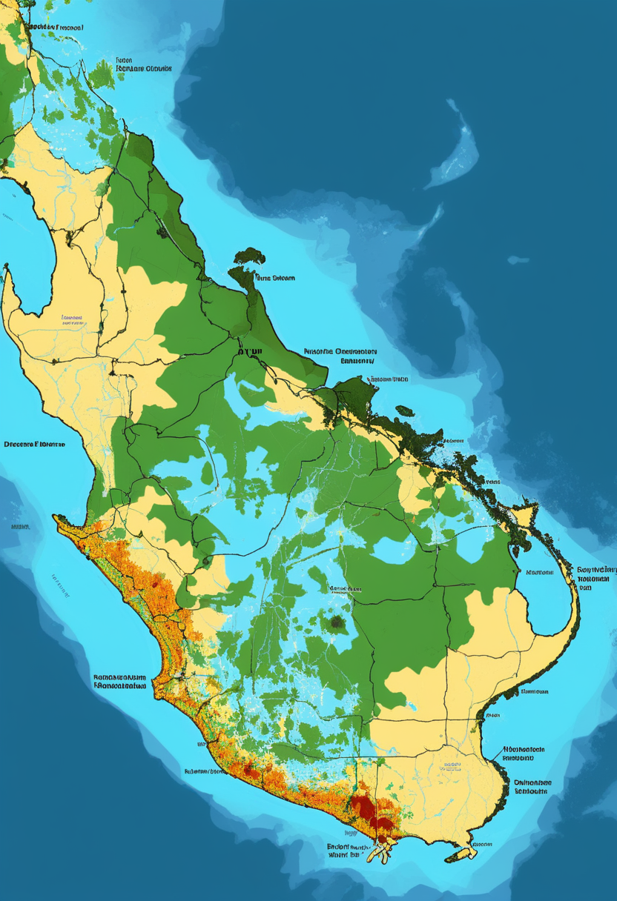
スリランカでは2026年1月〜6月15日時点でデング熱が41,000例超を記録している。WHOは世界デングデー（6月15日）にアジア太平洋地域のデングウイルス季節性拡大パターンに改めて注意を促した。毎年雨季に重なる大規模感染は、ベクター（媒介蚊）制御能力の限界と気候変動による感染域拡大が背景にある。エボラ対応に国際リソースが集中するなか、アジアの感染症が静かに積み重なっている実態が改めて確認された。
ウガンダが16日超のゼロ継続で終息の節目が視野に入り、WHOがOne Responseで複合感染症の統合対応を始動し、スリランカのデング熱が世界デングデーに41,000例を超えた ── 封じ込めの希望と複合危機の継続が並走する基盤の日曜日。
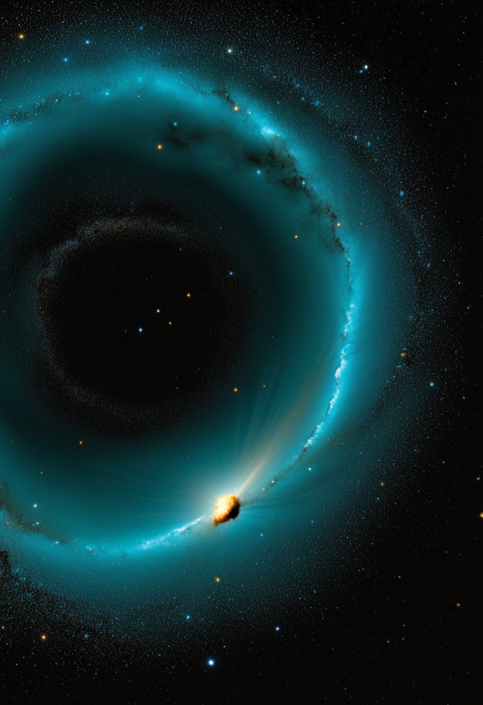
ESAユークリッド宇宙望遠鏡の第2次データ公開（Q2）が今週木曜6月24日に迫っている。「Euclid Galactic Bulge Survey（EGBS）」として2025年3月23日に約24時間かけて取得した4.8平方度の高解像度VIS画像が含まれる。本格コスモロジーデータリリース（暗黒エネルギー・暗黒物質マッピング）は2026年10月予定で、Q2はその前段となる重要な中間データだ。NASAナンシー・グレース・ローマン望遠鏡（2027年打ち上げ予定）との連携も予定されており、銀河バルジの微重力レンズ観測が系外惑星探索の基準データとなる。
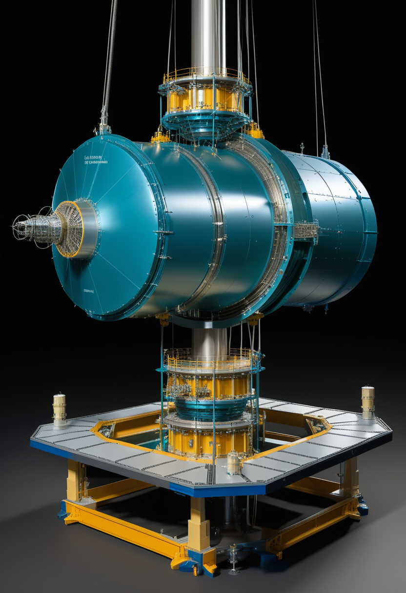
CERN LHCb検出器（アップグレード版）が2026年3月、2つのチャームクォークと1つのダウンクォークから成る新粒子Ξcc+（Xi-cc-plus）の発見を発表した。アップグレードLHCbによる初の粒子発見であり、20カ国・1,000人超の研究者が参加する国際共同研究の成果（英・マンチェスター大が主導）。二重チャームクォーク粒子はQCD（量子色力学）精密検証の新たな探針となり、標準モデルをより精細に問い直す実験的手がかりを提供する。「見えない世界の構成要素」を一段深く見る扉が、また一枚開いた。
ScienceDaily（2026年6月1日）によれば、科学者らが光の生成・誘導・読み取りを一枚のチップ上で完結させる超小型デバイスの開発に成功した。フォトニックコンピューティングの実用化に向けた重要な前進であり、AIアクセラレータと量子コンピュータ双方の高速化・省電力化を加速させる可能性を持つ。EeroQが同時期にNature Physics掲載の電子-ヘリウム量子ビットを初物理実装し、2026年はハードウェア量子技術の多様なアプローチが同時に実を結ぶ年として記録されつつある。「光でコンピュータを動かす」という夢が、集積回路という形で近づいてくる。
Euclid Q2が木曜日に銀河バルジの暗黒宇宙データを公開し、CERN LHCbが新粒子Ξcc+でQCD精密検証の扉を開き、光駆動オールインワンチップがフォトニクス新時代を告げる ── 今週の畏敬は宇宙・素粒子・光の三フロンティアで同時前進。
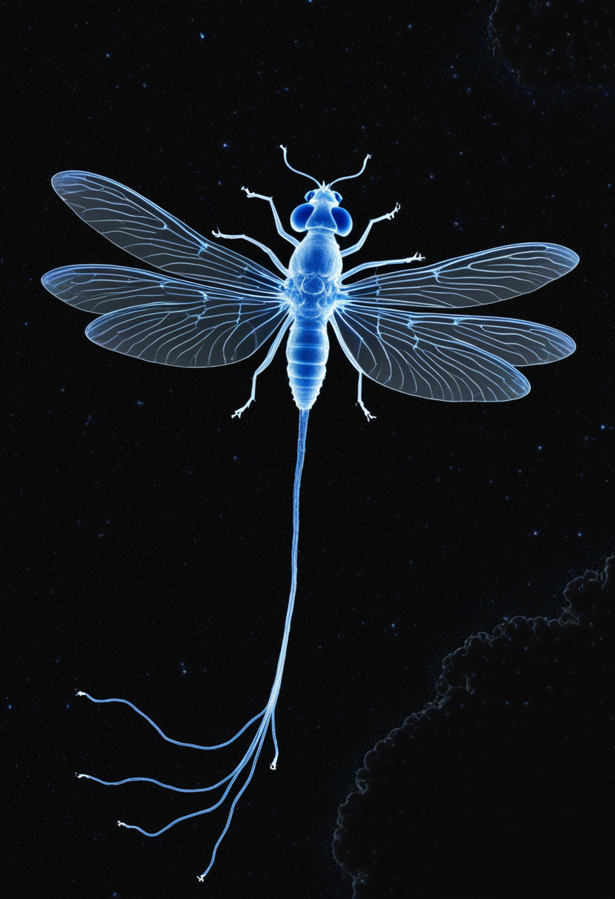
Eon Systemsが2026年3月に実現した「ショウジョウバエ脳のデジタルアップロード」の技術的骨格はこうだ。2024年Nature論文で確認済みのFlyWireコネクトーム（約14万ニューロン・シナプス結合マップ）に神経伝達物質のモデルを加え、MuJoCo物理シミュレーター内のショウジョウバエ仮想ボディと接続した。「ニューラル出力→物理ボディ→環境フィードバック」の閉ループが成立したことで、光・重力・餌の匂いに対する行動が実際のショウジョウバエと定性的に一致した。次フェーズはマウス脳（約7,000万ニューロン）で、560倍の挑戦が待つ。「意識を転送した」かどうかとは明確に区別しながら、「行動を生む脳」を最初にデジタル化した歴史的な第一歩として評価されている。
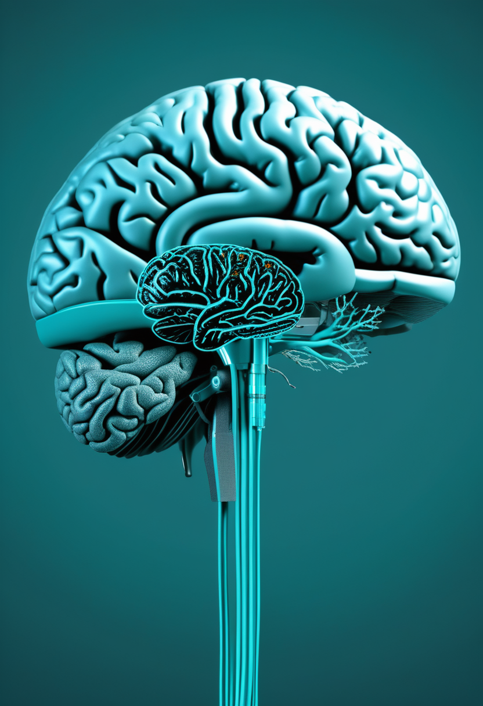
PMC掲載「Digital Twin Cognition: AI-Biomarker Integration in Biomimetic Neuropsychology」（PMC12561581）は、個人の認知システムの動的仮想モデルを構築し、連続モニタリング・予測・精密介入を可能にする新パラダイムを論じる。2021〜22年の古典MLから2025〜26年には深層強化学習・LLMベースアーキテクチャへの転換が観察されており、認知症・精神疾患の超早期診断・個別化治療への応用が期待される。データプライバシーとデジタルアイデンティティの倫理課題が実装の最大ハードルとして指摘されており、「認知の双子」という概念が臨床の現場に降りてきつつある。
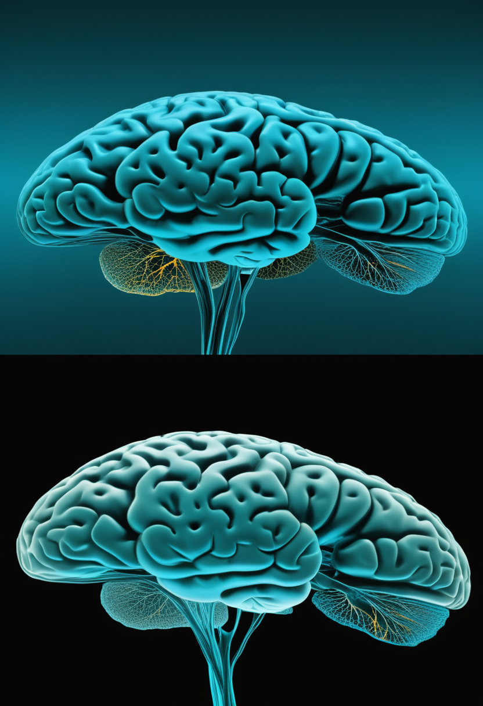
mindtransfer.meの2026年まとめによれば、2026年初頭時点でヒトニューロンの完全シリコン再現も意識アップロードの実証もゼロだ。Eon Systemsのショウジョウバエ実験は「科学的マイルストーン」として正しく評価されるが、「意識の転送」とは明確に区別される。「行動を生成するデジタルモデル」は実現したが、「行動の主体がデジタル空間に移った」という主観的継続性の証明は全く別問題だ。神経科学者の多くは全脳エミュレーションの意識的実現を30〜40年先と見積もっており、2026年の科学水準では「人格の連続性」に関する哲学的問いへの回答は存在しない。夢は壮大に、足元は誠実に。
Eon Systemsが閉ループ行動再現で全脳エミュレーションの扉を開き、PMC12561581が認知デジタルツインを精神医療へ接続し、意識転送との距離は30〜40年と科学は誠実に言う ── 今週の美は「デジタルの自分」という問いが技術・論文・哲学の三層で同時に深まった。
今日の世界は、Eon Systemsのショウジョウバエが14万のニューロンをシリコンの中に宿し、光に反応し、歩き、食べ、毛づくろいをした日曜日だった。意識かどうかは問わず、「行動するデジタル脳」が世界で初めて誕生した。SMAの世界ではNovartis Itvismaが年長患者・成人に遺伝子治療の扉を開き、MDA学会がNBSで早期に見つければ歩けるという証拠を積んだ。SynchronがピボタルでBCI初のFDA PMAを狙い始め、Neuralinkは$650Mを燃料に量産フェーズへ踏み込み、Tobii DynavoxがALSの視線を屋外の日差しの中に解放した。エボラDRCは837例で依然緊急事態、ウガンダは16日超のゼロで終息の節目が視野に入り、WHOはOne Responseで複合感染症を束ねる。Euclid Q2が木曜日に暗黒宇宙の断片を届け、CERN LHCbが二重チャームクォーク粒子という新しい扉を開き、光駆動チップがフォトニクスの夢を回路に刻んだ。
日曜日の便り。小さな14万のニューロンが、答えの続きを問いのまま次の世代へ渡していく。おやすみなさい。